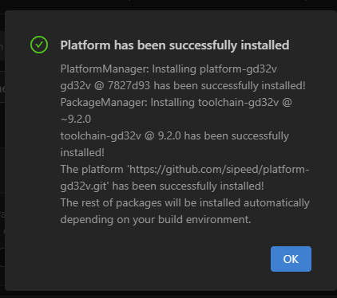

PIO 配置
安装 VS-CODE
VS CODE 是一款比较常用的开发工具。前往VScode官网，下载安装对应操作系统版本的安装包即可。
安装 PIO 插件
打开 VSCode -> 点击左侧扩展 -> 搜索 PlatformIO -> 点击安装插件 -> 等待安装完成 -> 重启 VSCODE

安装 GD32V 平台定义
PIO 目前提供命令行与图形界面两种方式来安装。下面将分别介绍：
（PS : 推荐命令行，因为能看到下载进度条。）
命令行
点击左侧PIO标志 -> 点击左下方的新建终端 -> 在终端窗口中执行下面的安装指令
- 发布版 （稳定版本）
platformio platform install gd32v
- 开发版（与Github同步）
platformio platform install https://github.com/sipeed/platform-gd32v

注：受国内网络环境影响，安装过程需要较长时间，请耐心等待。
图形界面
打开VS CODE -> 点击左侧 PIO 图标 -> 点击左下方的 Open 选项 -> 点击 Platforms 页面 -> 点击 Advanced Installation 打开添加窗口

在打开的窗口中输入下面的网址
https://github.com/sipeed/platform-gd32v.git
点击 Install 即可添加完成。

耐心等待即可安装成功。 （安装失败多为网络原因， 请更换网络环境后再次尝试）
